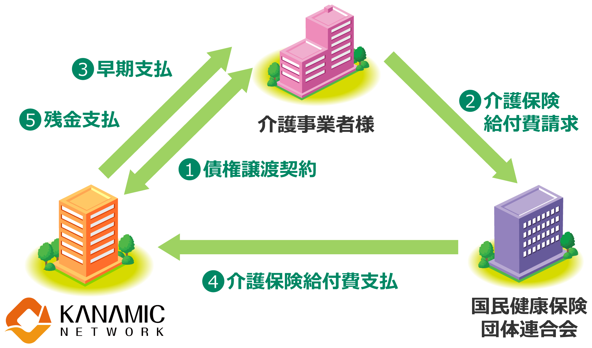
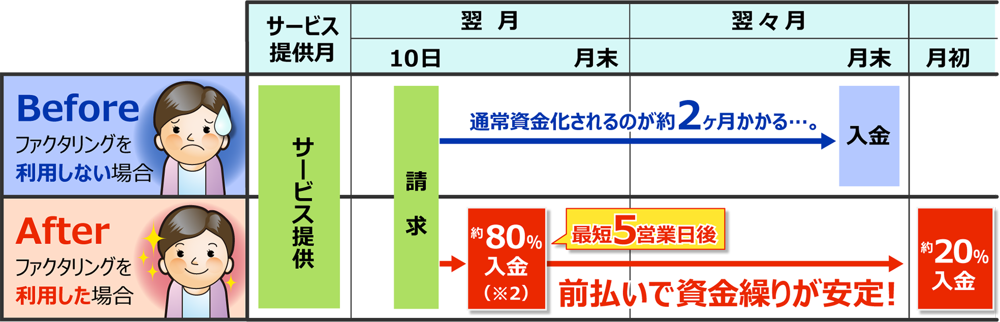
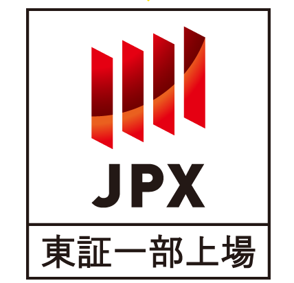

介護報酬の
早期資金化（現金化）を解決！
現行の介護報酬を受け取るまでの約2ヶ月間、事業所運営上必要な
人件費などの資金繰りをカナミックネットワークがサポートします！
スキーム概要図

介護事業者様が国民健康保険団体連合会（国保連）に対して請求する介護保険給付費をカナミックネットワークが前払いするサービスです。
通常より入金日が
約45日（※1）早い！
請求後受取るまでに通常約2ヶ月かかる介護報酬の入金が約45日（※1）早くなることで、
資金繰りが安定し、借入金の圧縮や新たな資金需要に備えることができます。
入金スケジュールのイメージ

※1︓記載日数は国保連からの⼊⾦が翌々月末日のケースとなります。
※2：一部手数料を差し引かせていただきます。
低コスト！お手軽！
ユーザーの皆様にとって導入しやすい費用と運用の設定になっております。
介護保険請求システムを提供するカナミックネットワークにお任せください。
東証一部上場企業だから安心！
医療・介護・子育て専業のITサービス企業で
唯一の東証一部上場企業です。
